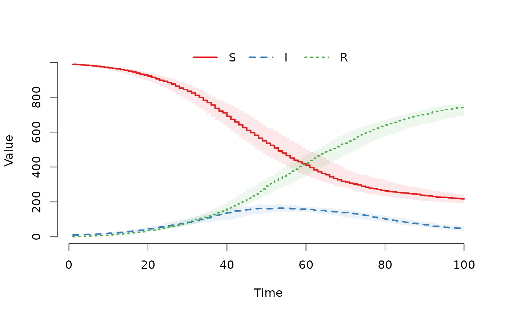
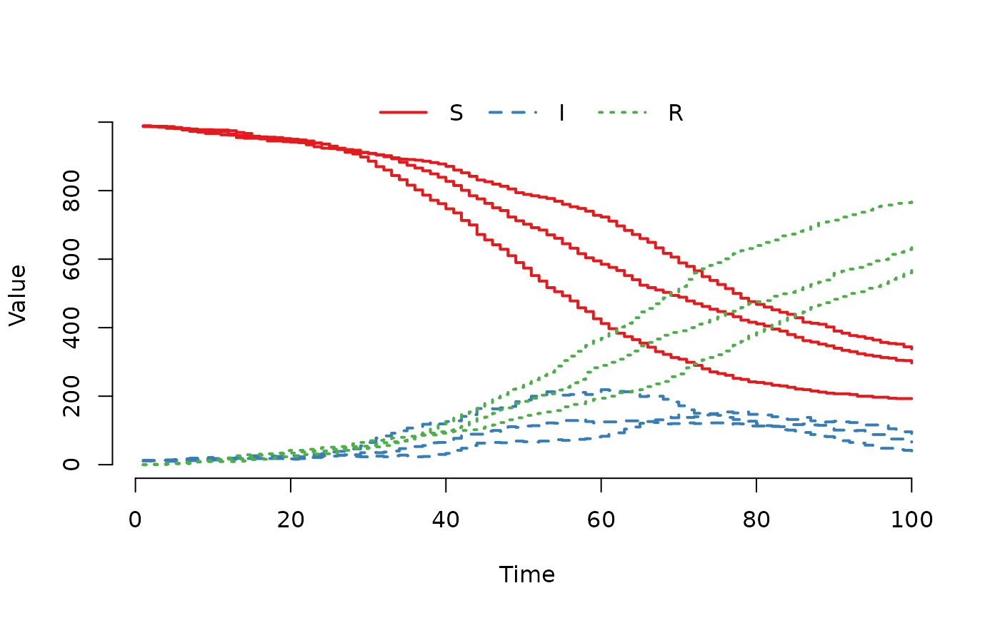
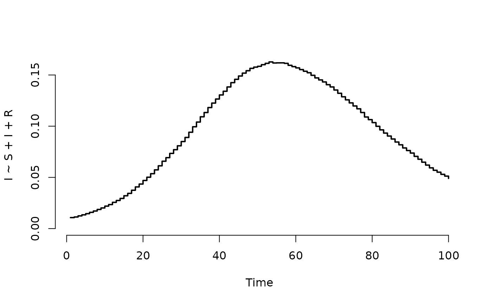
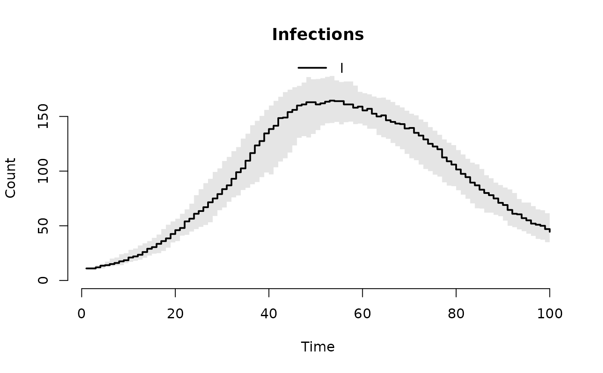

Plot the median and quantile range of the counts in all nodes, the counts in specified nodes, or the prevalence of a disease. The function supports formula notation for specifying compartments and prevalence calculations.
Usage
# S4 method for class 'SimInf_model'
plot(
x,
y,
level = 1,
index = NULL,
range = 0.5,
type = "s",
lwd = 2,
frame.plot = FALSE,
legend = TRUE,
log = "",
...
)Arguments
- x
The
modelto plot.- y
Character vector or formula with the compartments in the model to include in the plot. Default includes all compartments in the model. Can also be a formula that specifies the compartments that define the cases with a disease or that have a specific characteristic (numerator), and the compartments that define the entire population of interest (denominator). The left-hand-side of the formula defines the cases, and the right-hand-side defines the population, for example,
I~S+I+Rin a ‘SIR’ model (see ‘Examples’). The.(dot) is expanded to all compartments, for example,I~.is expanded toI~S+I+Rin a ‘SIR’ model (see ‘Examples’).- level
The level at which the prevalence is calculated at each time point in
tspan. 1 (population prevalence): calculates the proportion of the individuals (cases) in the population. 2 (node prevalence): calculates the proportion of nodes with at least one case. 3 (within-node prevalence): calculates the proportion of cases within each node. Default is1.- index
Indices specifying the nodes to include when plotting data. Plot one line for each node. Default (
index = NULL) is to extract data from all nodes and plot the median count for the specified compartments.- range
Show the quantile range of the count in each compartment. Default is to show the interquartile range i.e. the middle 50% of the count in transparent color. The median value is shown in the same color. Use
range = 0.95to show the middle 95% of the count. To display individual lines for each node, specifyrange = FALSE.- type
The type of plot to draw. The default
type = "s"draws stair steps. See base plot for other values.- lwd
The line width. Default is
2.- frame.plot
a logical indicating whether a box should be drawn around the plot.
- legend
a logical indicating whether a legend for the compartments should be added to the plot. A legend is not drawn for a prevalence plot.
- log
A character string which contains
"x"if the x axis is to be logarithmic,"y"if the y axis is to be logarithmic and"xy"or"yx"if both axes are to be logarithmic.- ...
Other graphical parameters (e.g.
xlab,ylab,main) that are passed on to the plot function.
Details
For a comprehensive tutorial with detailed explanations and more
examples, see the
vignette("Post-process data in a trajectory", package =
"SimInf").
Examples
## For reproducibility, set the seed and number of threads.
set.seed(123)
set_num_threads(1)
## Create an 'SIR' model with 100 nodes.
model <- SIR(u0 = data.frame(S = rep(990, 100),
I = rep(10, 100),
R = rep(0, 100)),
tspan = 1:100,
beta = 0.16,
gamma = 0.077)
## Run the model.
result <- run(model)
## Plot counts (median and IQR)
plot(result)

## Plot individual trajectories for specific nodes
plot(result, index = 1:3, range = FALSE)

## Plot prevalence (proportion of infected)
plot(result, I ~ S + I + R)

## Customize labels
plot(result, "I", xlab = "Time", ylab = "Count", main = "Infections")
